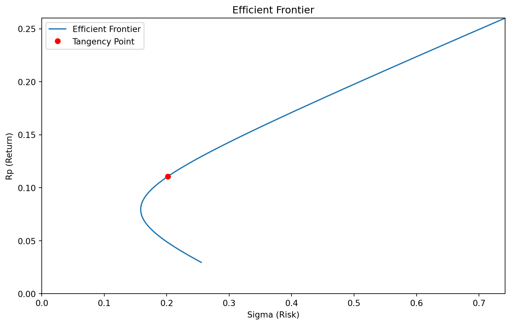
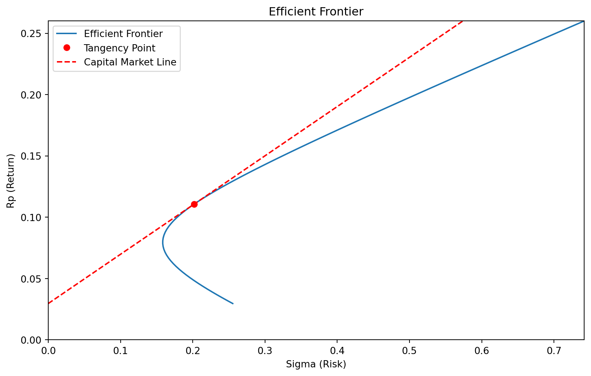
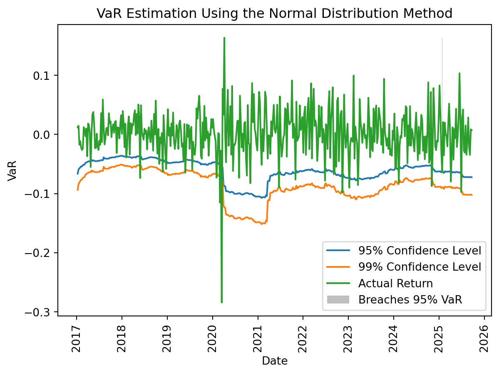

import numpy as np
import matplotlib.pyplot as plt
# Logarithmic utility function
def u_func(x):
return np.log(x)
def x_func(u):
return np.exp(u)
# Values for wealth and utility
x_vals = np.linspace(0.1, 2, 100)
u_x = u_func(x_vals)
# Gamble outcomes
x_gamble = [0.5, 1.5] # Outcomes of the gamble
p_gamble = [0.5, 0.5] # Probabilities
# Certain outcome
x_certain = 1
# Expected utility of the gamble
expected_utility = np.sum(np.array(p_gamble) * u_func(np.array(x_gamble)))
# Plotting the utility function
plt.figure(figsize=(10, 6))
plt.plot(x_vals, u_x, label=r'Utility Function: $u(x) = \ln(x)$', color='black')
# Plotting the certain outcome
plt.axvline(x=x_certain, color='black', linestyle='--')
plt.text(x_certain, u_func(x_certain) + 0.1, "$1$", horizontalalignment='center', fontsize=12)
# Plotting the gamble outcomes
plt.axvline(x=x_gamble[0], color='black', linestyle='--')
plt.axvline(x=x_gamble[1], color='black', linestyle='--')
plt.text(x_gamble[0], u_func(x_gamble[0]) - 0.3, "$0.5$", horizontalalignment='center', fontsize=12)
plt.text(x_gamble[1], u_func(x_gamble[1]) - 0.3, "$1.5$", horizontalalignment='center', fontsize=12)
# Plotting the expected utility
plt.axhline(y=expected_utility, color='gray', linestyle='--', label='Expected Utility of Gamble $EU(X)$')
plt.text(0.15, expected_utility, '$EU(X)$', verticalalignment='center', fontsize=12)
# Risk premium - distance between expected utility and utility of certain outcome
risk_premium = u_func(x_certain) - expected_utility
certainty_equivalence = x_func(expected_utility)
plt.annotate('', xy=(1, expected_utility), xytext=(certainty_equivalence, expected_utility),
arrowprops=dict(facecolor='black', arrowstyle='<->'))
# Separate annotation for the label (π) without the arrow
plt.annotate(r'$\pi$', xy=(0.9, expected_utility -0.1), fontsize=12)
# Labels and title
plt.title('Utility Function Demonstrating Risk Aversion')
plt.xlabel('Wealth (W)')
plt.ylabel('Utility (U)')
plt.legend()
plt.grid(True)1 - Introduksjon og case


Introduksjon
Caset
- Skriv en rapport om en aksje, fond eller strategi på TITLON, og argumenter for hvorfor dette er et bra, dårlig eller usikkert investeringscase.
- I rapporten skal du bruke:
- Teori om forventning, nytte og risiko
- Porteføljeteori
- Faktorer
- Value At Risk
Det første dere begynner med, er å finne caset deres. Det trengs det ingen forkunskap til
Det er veldig lurt å jobbe med temaet som vi har gått gjennom på forelesning, etter gjeldende forelesning.
I denne forelesningen
Korte om kursets tema: * Forelesning 2: Forventning, nytte og risiko * Forelesning 3: Porteføljeteori og matriser * Forelesning 4: Faktorer * Forelesning 5: Value at Risk (VaR)
Forelesning 2: Forventning, nytte og risiko
Nyttefunksjonen:
Forelesning 3: Porteføljeteori og matriser
Her bruker vi titlondatabasen:
from IPython.display import IFrame
# Embed the web page using an iframe
IFrame("https://titlon.uit.no/", width=700, height=200)Vi bruker scriptmuligheten i Titlon for å hente data
Porteføljefronten
Utregninger
Reduserer utvalget:
import numpy as np
import pandas as pd
df = pd.read_pickle('data/stocks.df')
# Defining annual risk free rate.
rf = df['NOWA_DayLnrate'].mean()*7
isin_with_first_date = df[df['Date'] == df['Date'].min()]['ISIN'].unique()
isin_with_last_date = df[df['Date'] == df['Date'].max()]['ISIN'].unique()
valid_isins = set(isin_with_first_date).intersection(isin_with_last_date)
df = df[df['ISIN'].isin(valid_isins)]
df['Name (ISIN)'] =df['Name'].str.upper().str.strip() + '(' + df['ISIN'] + ')'
# keeping only the most traded shares
res = (
df.groupby(['Name (ISIN)'])
.agg({'Turnover': 'sum'})
.sort_values(by='Turnover', ascending=False)
)
df = df.merge(res.head(4), on=['Name (ISIN)'],
how='inner')
res.head(4)| Turnover | |
|---|---|
| Name (ISIN) | |
| EQUINOR(NO0010096985) | 1.789492e+12 |
| NORSK HYDRO(NO0005052605) | 6.394193e+11 |
| TELENOR(NO0010063308) | 5.545262e+11 |
| YARA INTERNATIONAL(NO0010208051) | 5.404874e+11 |
Lager avkastningsmatrisen:
def get_matrix(df, field):
"""Converts the df to a matrix df that can
be used to calculate the covariance matrix"""
import pandas as pd
df['Date'] = pd.to_datetime(df['Date'])
df_unique = df.drop_duplicates(
subset=['Date', 'ISIN'])
pivot_df = df_unique.pivot(index='Date',
columns='Symbol',
values=field)
pivot_df = pivot_df.dropna()
# Annualized weekly returns
df_weekly = pivot_df.resample('W').sum()
return df_weekly
#X is a matrxi with e
X_df = get_matrix(df, 'lnDeltaP')
X_df = X_df.sort_index()
X_df| Symbol | EQNR | NHY | TEL | YAR |
|---|---|---|---|---|
| Date | ||||
| 2016-01-10 | -0.118288 | -0.137636 | -0.008125 | -0.058065 |
| 2016-01-17 | -0.060966 | -0.054818 | -0.085838 | -0.047905 |
| 2016-01-24 | 0.060966 | 0.023505 | 0.049143 | 0.001741 |
| 2016-01-31 | 0.074498 | 0.024710 | -0.007077 | -0.053584 |
| 2016-02-07 | 0.027490 | 0.065780 | -0.029552 | 0.024170 |
| ... | ... | ... | ... | ... |
| 2025-07-06 | 0.026730 | 0.021321 | 0.010887 | 0.021778 |
| 2025-07-13 | 0.042289 | 0.041652 | -0.004469 | 0.023654 |
| 2025-07-20 | -0.027114 | -0.007206 | 0.040745 | -0.006776 |
| 2025-07-27 | -0.030583 | 0.047819 | -0.027399 | 0.014796 |
| 2025-08-03 | 0.038459 | -0.036054 | 0.001892 | -0.010360 |
500 rows × 4 columns
Finner gjennomsnittsvektoren og varians-kovarians-matrisen:
# Converting X to a numpy array:
X = np.array(X_df)
# Calculating the covariance
cov_matrix = np.cov(X, rowvar=False)
# Calculating the means vector, and reshaping it to a
# column vector.
means = np.mean(X, axis=0).reshape((X.shape[1],1))Definerer porteføljefrontfunksjonen:
ones = np.ones((len(means),1))
A = (ones.T @ np.linalg.inv(cov_matrix) @ ones)[0][0]
B = (ones.T @ np.linalg.inv(cov_matrix)
@ (means-rf))[0][0]
C = ((means.T-rf) @ np.linalg.inv(cov_matrix)
@ (means-rf))[0][0]
def portfolio_front(expected_excess_return, a, b, c):
r = expected_excess_return
minimum_variance = (1/a
+ ((r - abs(b)/a)**2) / (c - b**2/a))
minimum_volatility = minimum_variance**0.5
return minimum_volatilityPlotter porteføljefronten:
from matplotlib import pyplot as plt
#Creating plot
fig, ax = plt.subplots(figsize=(10, 6))
plot_scale = 52
MAX_AXIS = 0.005
#applying the function
rp_values = np.linspace(0, MAX_AXIS-rf, 100)
sigma_values = portfolio_front(rp_values, A, B, C)
#plotting, after annualizing the weekly data
ax.plot(plot_scale**0.5*(sigma_values), plot_scale*(rp_values+rf),
label='Efficient Frontier')
#plot settings:
ax.set_xlim([0, np.max(sigma_values*plot_scale**0.5)])
ax.set_ylim([0, (np.max(rp_values)+rf)*plot_scale])
ax.set_xlabel('Sigma (Risk)')
ax.set_ylabel('Rp (Return)')
ax.set_title('Efficient Frontier')
ax.legend()
Legger til punkte for den optimale porteføljen:
# Calculating the tangency point of the normalized
# optimal portfolio
tangency_sigma = portfolio_front(C/B, A, B, C)
#plotting it, after annualizing the weekly data
ax.plot(plot_scale**0.5*tangency_sigma,
plot_scale*(C/B + rf),
'ro',label='Tangency Point')
ax.legend()
fig
Porteføljefronten med optimal portefølje og tangeringslinje
sigma_range = np.linspace(0, np.max(sigma_values), 100)
# Plotting the portfolio front, after annualizing the
# weekly data
ax.plot(plot_scale**0.5*sigma_range, plot_scale*(rf
+ sigma_range*(C/B)/tangency_sigma),
color='r', linestyle='--',
label='Capital Market Line')
ax.legend()
figForelesning 4: Faktorer
Finner volatilitet og avkastning til faktorene:
import pandas as pd
df = pd.read_pickle('data/factors.df')
df['Date'] = pd.to_datetime(df['Date'])
df = df.set_index('Date')
df_weekly = df.resample('W').sum()
df_weekly = df_weekly[['SMB', 'HML', 'LIQ', 'MOM']].dropna()
df = df[['SMB', 'HML', 'LIQ', 'MOM']].dropna()
means = df_weekly.mean()*52
std = df_weekly.std()*52**0.5
print(std)
print(means)
df_weeklySMB 0.778593
HML 0.595021
LIQ 0.949455
MOM 1.208006
dtype: float64
SMB 1.076634
HML -0.878219
LIQ 0.165220
MOM 1.891799
dtype: float64| SMB | HML | LIQ | MOM | |
|---|---|---|---|---|
| Date | ||||
| 2016-01-10 | 0.040139 | -0.038205 | 0.065538 | 0.039485 |
| 2016-01-17 | -0.004794 | -0.053537 | 0.044127 | 0.013392 |
| 2016-01-24 | 0.016701 | 0.025072 | -0.006152 | -0.014409 |
| 2016-01-31 | 0.002747 | -0.001928 | -0.017278 | -0.024070 |
| 2016-02-07 | -0.008014 | -0.029920 | 0.001621 | -0.008874 |
| ... | ... | ... | ... | ... |
| 2025-07-06 | -0.008904 | 0.000000 | -0.003560 | 0.025957 |
| 2025-07-13 | -0.036752 | 0.000000 | 0.003986 | -0.033976 |
| 2025-07-20 | -0.025081 | 0.000000 | -0.036009 | 0.013855 |
| 2025-07-27 | 0.013498 | 0.000000 | 0.013135 | 0.006886 |
| 2025-08-03 | 0.000000 | 0.000000 | 0.000000 | 0.000000 |
500 rows × 4 columns
Plotter punktene i grafen fra forrige kapittel:
for series in means.index:
ax.scatter(std[series], means[series], label=series)
ax.legend()
fig
Forelesning 5: VaR
Utregninger
import numpy as np
def generate_backtest(f, df, name, estimation_win_size):
# Initialize lists to store calculated values
datelist = []
sigmalist = []
d95list = []
d99list = []
ret = []
# Iterate over returns to calculate and store VaR and volatility estimates
for t in range(estimation_win_size, len(df)):
# Record date and current return
datelist.append(df.index[t].date())
ret.append(df[name].iloc[t])
# Extract data from the estimation window (t-estimation_win_size to t-1)
x = df[name].iloc[t-estimation_win_size:t-1]
# Apply the provided VaR estimation function using the historical data and past volatility
d95, d99, sigma = f(x, sigmalist)
# Append the estimates to their respective lists
sigmalist.append(sigma)
d95list.append(d95)
d99list.append(d99)
# Return the results as numpy arrays for ease of analysis
return (np.array(d95list),
np.array(d99list),
np.array(sigmalist),
np.array(datelist),
np.array(ret))import matplotlib.pyplot as plt
def evaluate(plt, d95, d99, ret, dates, heading):
# Clear the plot area to avoid overlapping plots
plt.cla()
# Plot the 95% VaR, 99% VaR, and actual returns
plt.plot(dates, d95, label='95% Confidence Level')
plt.plot(dates, d99, label='99% Confidence Level')
plt.plot(dates, ret, label='Actual Return')
# Highlight instances where returns breach the 95% VaR
maxret = max(ret)
breaches_95 = [maxret if d > r else 0 for d, r in zip(d95, ret)]
plt.bar(dates, breaches_95, color='gray', alpha=0.5, width=0.5, label='Breaches 95% VaR')
# Set labels and title
plt.ylabel('VaR')
plt.xlabel('Date')
plt.title(heading)
plt.xticks(rotation=90)
plt.legend(loc="lower right")
plt.subplots_adjust(bottom=0.15)
plt.show()
# Calculate and print the breach percentage for each confidence level
backtest_results = [np.round(sum(d > ret) / len(ret) * 100, 1) for d in [d95, d99]]
for i, level in enumerate([95, 99]):
breaches = sum([d95, d99][i] > ret)
print(f"{heading} with {level}% confidence interval:\n"
f"Breaches: {breaches}\n"
f"Backtesting (Realized VaR - % breaches): {backtest_results[i]}%\n")PVALS = [0.05, 0.01] # Confidence intervals (95% and 99%)
from scipy.stats import norm
def normal_est(x, sigmalist):
z = norm.ppf(PVALS) # Z-scores for the specified confidence levels
sigma = np.std(x, ddof=1) # Sample standard deviation
return z[0] * sigma, z[1] * sigma, sigma
def historical_est(x, sigmalist):
q95 = abs(np.quantile(x, PVALS[0])) # 95th percentile of historical losses
q99 = abs(np.quantile(x, PVALS[1])) # 99th percentile of historical losses
return -q95, -q99, None # VaR values are negative to indicate potential loss
def last_volat(x, sigmalist):
x = np.array(x)
z = norm.ppf(PVALS)
if not sigmalist: # If sigmalist is empty, use initial standard deviation
sigma = np.std(x, ddof=1)
else: # Update sigma based on past volatility and recent error
sigma = (0.1 * (x[0] - np.mean(x))**2 + 0.9 * sigmalist[-1]**2)**0.5
return z[0] * sigma, z[1] * sigma, sigmaEvaluering
NAME = 'EQNR'
ESTIMATION_WINSIZE = 52
df = pd.read_pickle('data/X.df')
(normal95, normal99,
sigma, dates, ret )= generate_backtest(normal_est,
df, NAME, ESTIMATION_WINSIZE)
evaluate(plt, normal95, normal99, ret, dates,
'VaR Estimation Using the Normal Distribution Method')
VaR Estimation Using the Normal Distribution Method with 95% confidence interval:
Breaches: 25
Backtesting (Realized VaR - % breaches): 5.6%
VaR Estimation Using the Normal Distribution Method with 99% confidence interval:
Breaches: 10
Backtesting (Realized VaR - % breaches): 2.2%